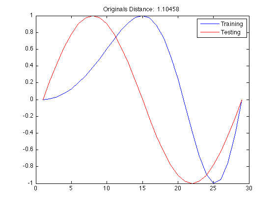
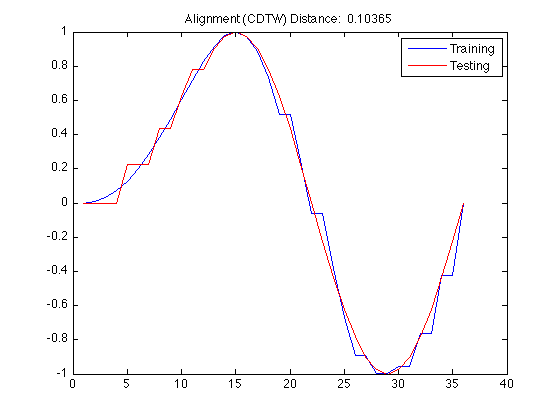
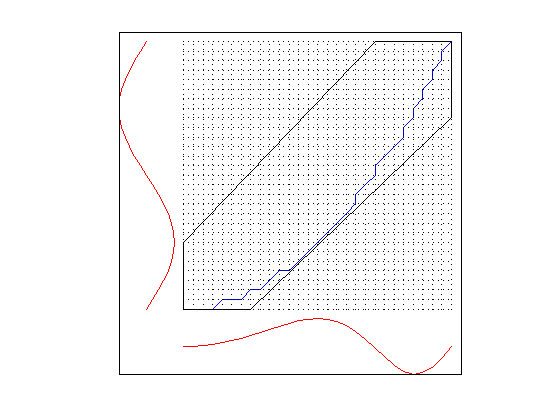
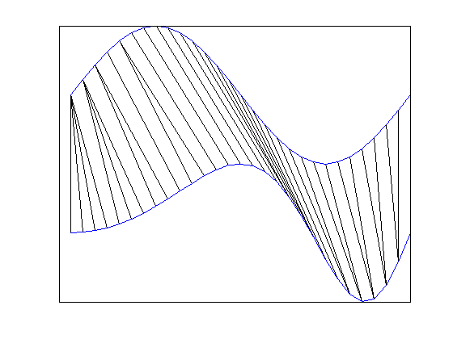
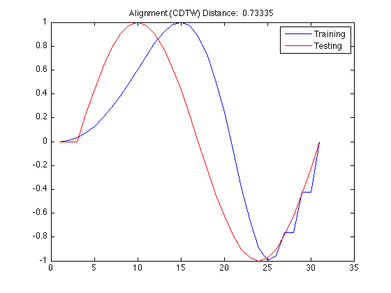
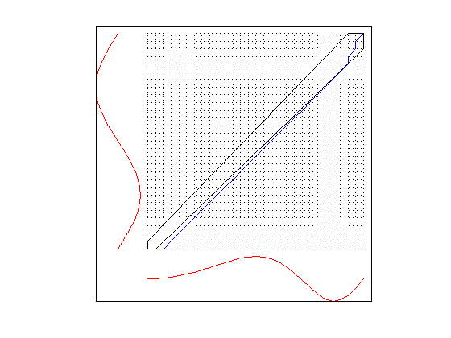
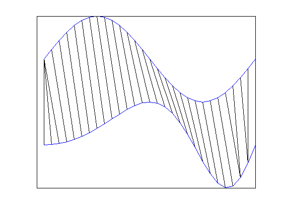

Contents
Time Series Classification Utility (TSCU) test suite.
The test runs TSCU in default settings.
- Author : Huseyin Kaya
- Website: http://web.itu.edu.tr/huseyinkaya/tscu
- Sources: https://github.com/hkayabilisim/TSCU
clear all close all clc
Creating a toy dataset
Let's create 4 time series with two different classes: 1 and 2. First class represents a sine wave, whereas the later represents a cosine wave. We also deviced an artifical change within the same class time series by warping the time axis with w(t)=t^2.
Name Function Class a sin(2*pi*t) 1 b sin(2*pi*t*t) 1 c cos(2*pi*t) 2 d cos(2*pi*t*t) 2
If you have UCR data available, then load it as following:
trn=load('synthetic_control_TRAIN');
tst=load('synthetic_control_TEST');t = linspace(0,1,29); a=sin(2*pi*t); b=sin(2*pi*t.^2); c=cos(2*pi*t); d=cos(2*pi*t.^2); tst = [ 1 a ; 2 c]; trn = [ 1 b ; 2 d];
Running TSCU with Constrained SAGA
By using DTWbandwidth parameter, you can limit DTW to stay a banded region in the similarity matrix.
30% percent
In this example we took %30 of the matrix which is enough to get a good alignment
tscu(trn,tst,'Alignment','CDTW','DTWbandwidth',30,'DisplayAlignment',{1,1});
Size of training set.....................: 2
Size of testing set......................: 2
Time series length.......................: 29
Classification method....................: K-NN
Alignment method.........................: CDTW
Displaying input data....................: no
No cross validation is chosen............: 0
DTW band width (%).......................: 30.00
Displaying alignments (trn)..............: 1
Displaying alignments (tst)..............: 1
Dumping distance matrix..................: no
Class information........................: 1 [TRN: 1 TST: 1]
Class information........................: 2 [TRN: 1 TST: 1]
index of testing objects.................: 1 2
labels of testing objects (True).........: 1 2
labels of testing objects (Estimated)....: 1 2
closest training objects.................: 1 2
Overall Accuracy.........................: 1.000
Overall Error............................: 0.000
Producer Accuracy........................: 1.000 1.000
User Accuracy............................: 1.000 1.000
Kappa....................................: 1.000
Z-value..................................: Inf
Confusion matrix.........................:
Confusion matrix
1 2 UA TO
1 1 0 1.000 1
2 0 1 1.000 1
PA 1.000 1.000
TO 1 1 2
Classification time (sec)................: 4.04
The end of TSCU..........................: FINISHED
    10% percent
If we further narrow the band, then the alignment is getting worse.
tscu(trn,tst,'Alignment','CDTW','DTWbandwidth',10,'DisplayAlignment',{1,1});
Size of training set.....................: 2
Size of testing set......................: 2
Time series length.......................: 29
Classification method....................: K-NN
Alignment method.........................: CDTW
Displaying input data....................: no
No cross validation is chosen............: 0
DTW band width (%).......................: 10.00
Displaying alignments (trn)..............: 1
Displaying alignments (tst)..............: 1
Dumping distance matrix..................: no
Class information........................: 1 [TRN: 1 TST: 1]
Class information........................: 2 [TRN: 1 TST: 1]
index of testing objects.................: 1 2
labels of testing objects (True).........: 1 2
labels of testing objects (Estimated)....: 2 2
closest training objects.................: 2 2
Overall Accuracy.........................: 0.500
Overall Error............................: 0.500
Producer Accuracy........................: 1.000 0.000
User Accuracy............................: 0.500 NaN
Kappa....................................: 0.000
Z-value..................................: 0.000
Confusion matrix.........................:
Confusion matrix
1 2 UA TO
1 1 1 0.500 2
2 0 0 NaN 0
PA 1.000 0.000
TO 1 1 2
Classification time (sec)................: 5.65
The end of TSCU..........................: FINISHED
  